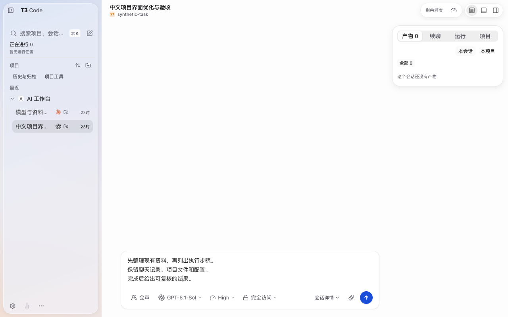
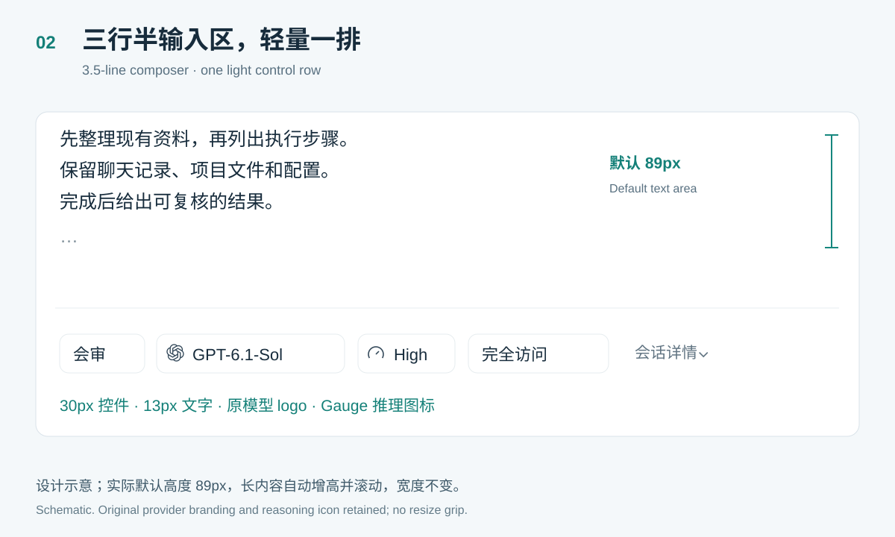
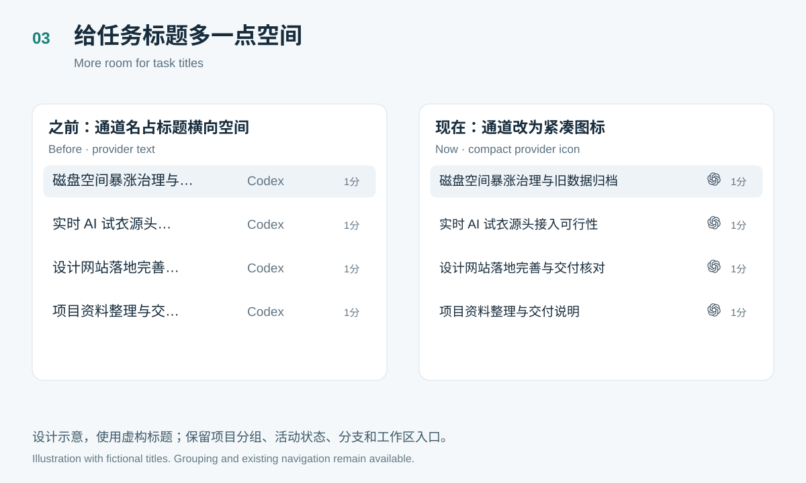
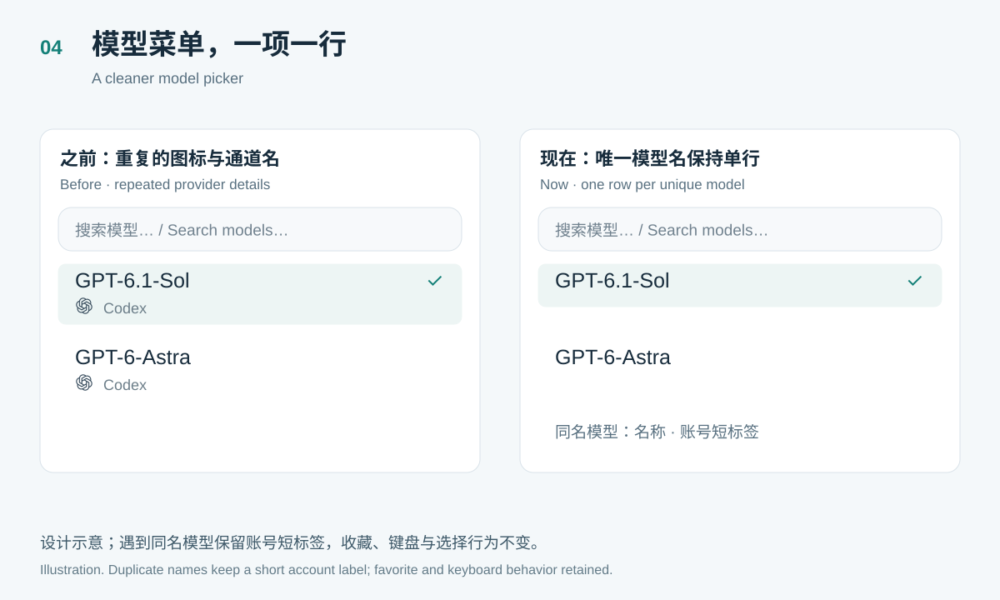
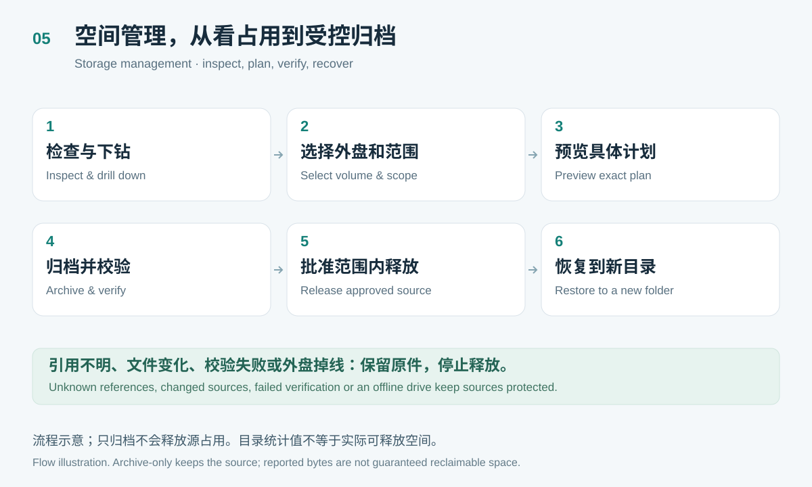
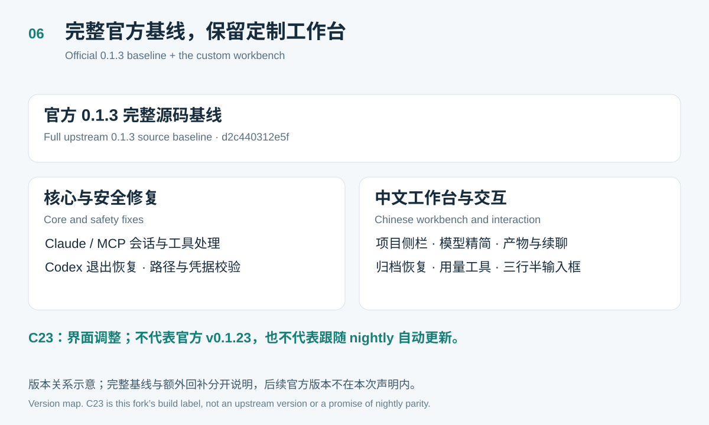
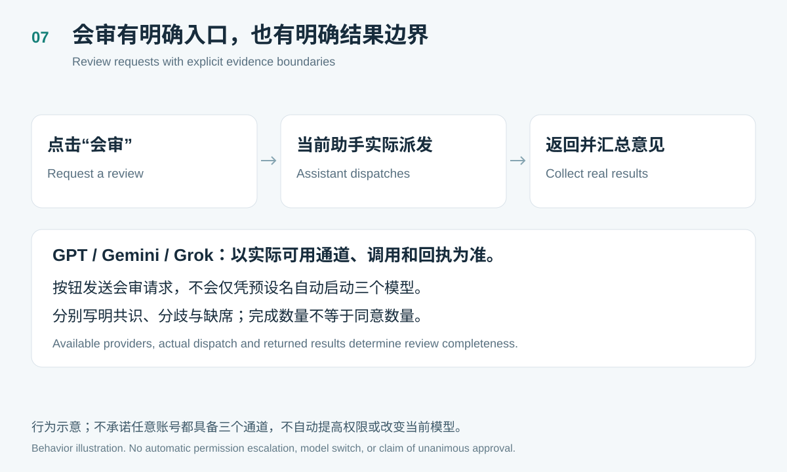
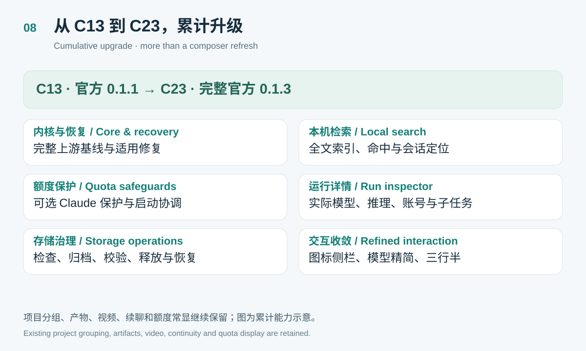

官方 0.1.3 完整基线，配合更紧凑的中文工作台。第一张为合成数据环境的实际截图；其余为功能示意，不是验收截图。
Full official 0.1.3 baseline with a compact custom workbench. The first image is an actual synthetic-data capture; all other cards are explanatory illustrations.







